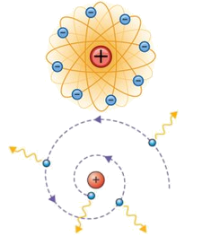
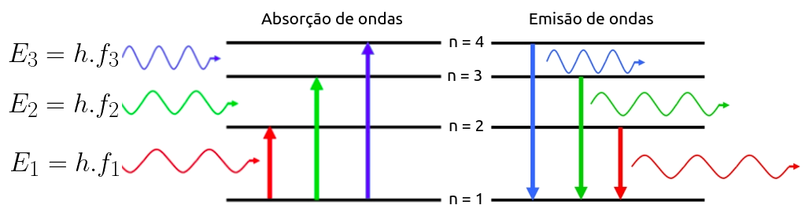
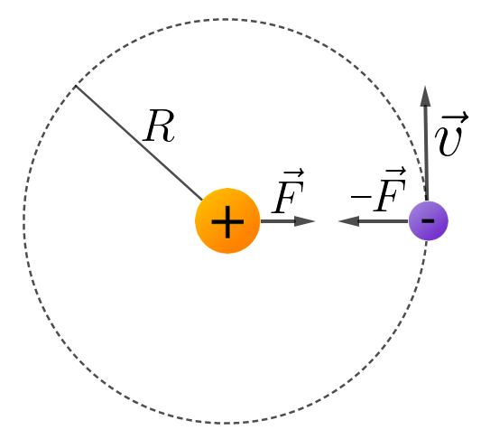
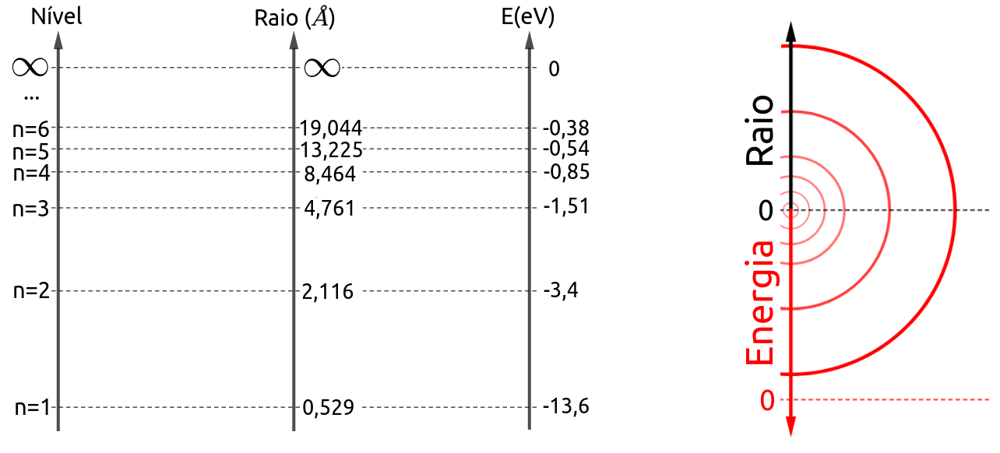
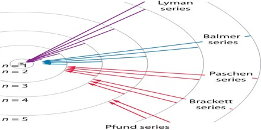

Aula13-103: O átomo de Bohr
O problema do átomo de Rutherford
|
O modelo de rutherford propunha que os átomos fossem constituidos por cargas elétricas negativas que moviam-se circularmente ao redor de um núcleo maciço de carga elétrica positiva. Este modelo ficou conhecido como modelo plenetáio de Rutherford. No entanto, há muito já se sabia que cargas aceleradas geram campos magnéticos. Portanto, como neste modelo o elétron executa um movimento circular, ele havia de ter aceleração centrípeta e tal aceleração deveria promover uma perda energética — Uma mitigação de sua eneriga potêncial elétrica — que faria o elétron necessariamente cair em espiral em direção ao núcleo. E tudo isto deveria acontecer, de acordo com os cálculos, dentro de 10-11 segundos. Além disto, a queda espiralada do elétron em direção ao núcleo deveria promover emissões de ondas que fossem contínuas e a cada instante mais energéticas. Tais ocorrências não são verificadas na natureza. |
 |
Cargas aceleradas geram campos eletromagnéticos
[Faça a simulação abaixo]

Contexto em que Bohr está inserido
Desde os trabalhos de Plank, sabemos que a energia que trafega em uma onda eletromagnética é quantizada e que depende da frequência da onda em questão. Logo após os trabalhos de Planck, Einstein explicou o efeito elétrico sugerindo que luz fosse constituida por fótons que, ao interagirem com elétrons, cediam tudo ou nada de sua energia. Somado a isto, os espectros de emissão e absorção de luz aprensentavam características que indicavam preferência dos átomos por determinadas frequências de ondas. Todo este cenário que por trabalho árduo de muitos cientistas se foi construindo ao longo de algumas décadas, assinalava que havia algo de quantizado na estrutura atômica. Com efeito, a energia que um átomo pode possuir é quantizada, pode assumir apenas valores discretos. Observe que se tomarmos isto por verdade, os espectros de emissão e absorção se justificam.

Se um determinado átomo só pode possuir alguns valores de energia, então apenas algumas frequências se fazem úteis para fazê-lo transitar entre os níveis de energia possíveis. As ondas de demais frequências são ignoradas no processo.
A explicação de Bohr
Niels Bohr sabia, desde os estudos de Plank e Einstein, que a seguinte razão é constante:
Tendo isto em vista, ele notou que esta razão e o momento angular (L) de um elétron compartilham das mesmas dimenssões:
Esta constatação foi a motivação que levou Bohr a propôr que o momento ângular de um elétron fosse igual a um múltiplo inteiro de h. Bohr desenvolveu os cálculos e eles não se mostraram convincentes. Então Bohr propôs que que o momento ângular fosse um múltiplo inteiro de uma parte de h; e assim obteve sucesso.
➔ DESENVOLVIMENTO DOS CÁLCULOS QUE ATESTAM OS PRESSUPOSTOS DE BOHR
|
A força centrípeta que age sobre o elétron é a força de Coulomb
E a energia potencial elétrica é dada pela seguinte expressão: A relação entre a energia cinética e a energia potencial pode ser observada analisando-se a eq.1 A energia total será igual a: Com a imposição da quantização do momento angular, teremos: |
 |
Substituindo esta velocidade na equação 1, encontraremos o seguinte valor para o raio:
Em que rb é uma constante da natuza que chamamos raio de Bohr e cujo valor mede 0,0529 nm = 0,529 Å
Ao substituirmos o raio na fórmula da energia potêncial elétrica obteremos:
Em que Er é uma constante da natureza que chamamos energia de Rydberg e cujo valor é de 13,6 eV.
Veja algumas possibilidades de órbitas segundo os nossos cálculos:

Demonstração da fórmula de Balmer
Conforme o que apontou Bohr, um elétron pode absorver ou emitir apenas fótons cujas energias correspondem a diferenças de níveis energéticos. Portanto, um fóton absorvido ou emitido terá que ter energia igual a:
Como não faz sentido se falar em comprimento de onda negativo, n será sempre maior que n'.
Assim sendo; ao se avaliar um espectro de absorção, sabemos que a variação de energia será positiva, disto decorre que neste caso n' representa o nível de origem do elétron e n o nível de destino.
Em um espectro de emissão, a variação de enrgia terá que ser negativa, então n representará o nível de origem e n' o nível de destino
Séries de emissão
Podemos catalogar os ondas emitidas do átomo de hidrogênio em caterias, de acordo com o nível de destino do elétron.
|
 |
➔ SÉRIE DE LYMAN: é conjunto de ondas cujas emissões foram provocadas por um salto quantico (transição) para o nível fundamental de energia. As ondas provenientes desta série encontram-se na faixa do ultravioleta. ➔ SÉRIE DE BALMER: é conjunto de ondas cujas emissões foram provocadas por um salto quantico (transição) para o segundo nível de energia. As ondas provenientes desta série encontram-se na faixa do visível. ➔ SÉRIE DE PASCHEN: é conjunto de ondas cujas emissões foram provocadas por um salto quantico (transição) para o terceiro nível de energia. As ondas provenientes desta série encontram-se na faixa do infravermelho, assim como as ondas das demais séries. |